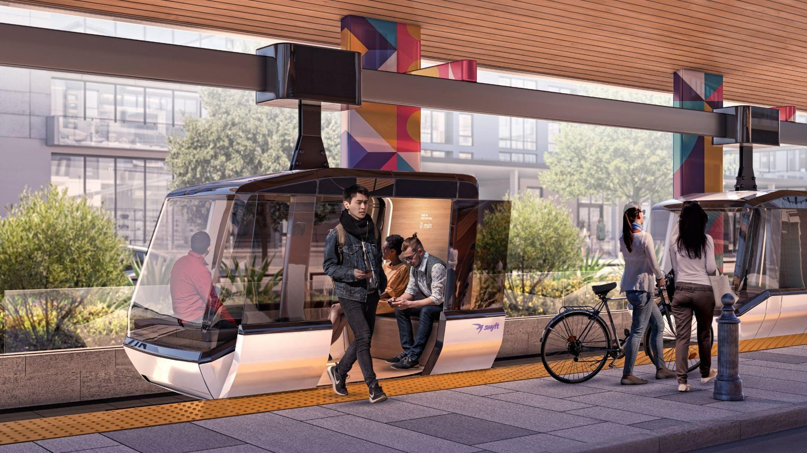
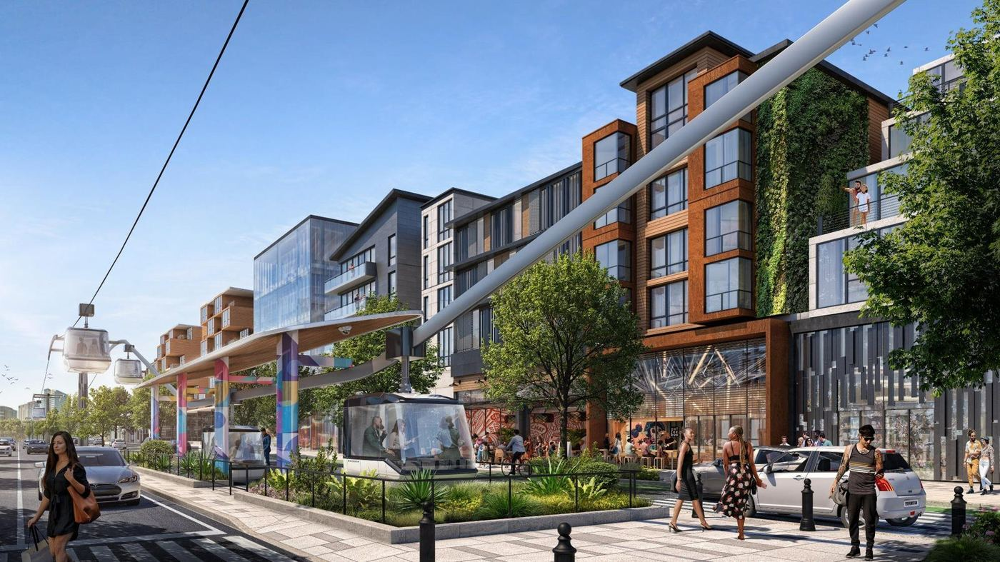
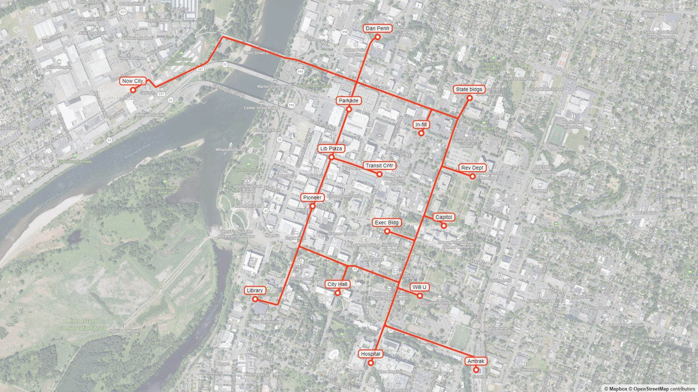
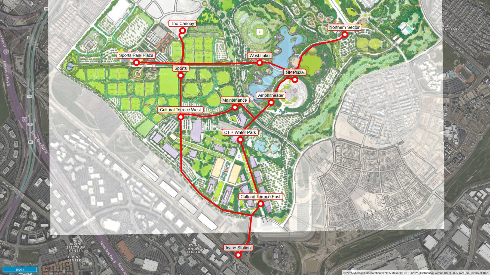
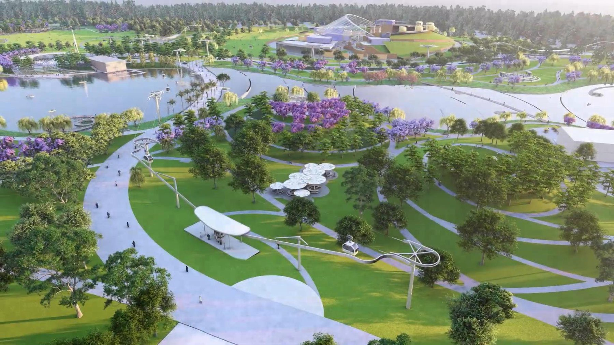
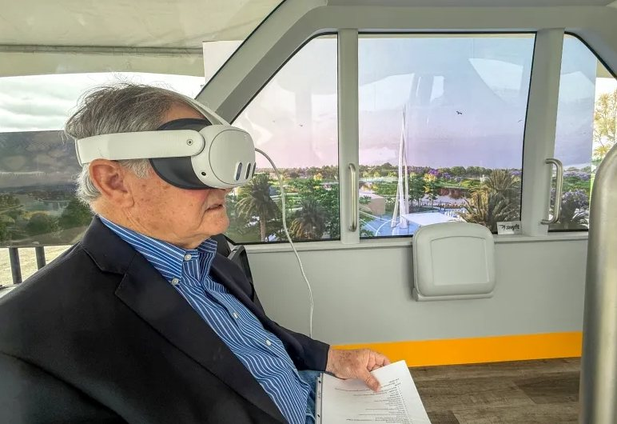

This site is shared with project stakeholders for discussion purposes. Enter the access code to continue.
Need access? Contact erik@nowcitylabs.com
A faster-than-car aerial circulator - and the case for one in Salem.
A "transit circulator" is a type of short-distance public transportation service designed to move people efficiently within a specific area, often connecting major destinations such as transit hubs, business districts, parking areas, and attractions.
Swyft Cities is the company implementing the "Whoosh" cable-based transit circulator. Whoosh offers faster-than-car trip times. One of its first deployments is at the 1,300-acre Irvine Great Park. The City of Irvine's independent travel demand forecast projects that Whoosh will carry 27,000 daily riders. For the Great Park, compared to traditional transit, the analysis shows that Whoosh provides four times the ridership at only one-sixth the operating cost per trip.
Unlike traditional straight-line gondolas, Swyft Cities' Whoosh can operate two-dimensional networks, such as 12 interconnected stations within a two-square-mile area. Stations are offline from the main cableway, meaning that en-route vehicles bypass all intermediate stations - every trip is nonstop from origin to destination. Vehicles are always waiting at the station, so passengers can board immediately and begin their journey. Whoosh quickly surmounts obstacles such as State Route 22, the Willamette River, Pringle Creek, railroad tracks, arterial streets, and hills.
Whoosh is 3X faster than Uber at a fraction of the cost.

For limited distribution to city, county, and state staff and electeds, the Salem-Keizer Area Transportation Study (SKATS), the Mid-Willamette Valley Council of Governments (MWVCOG), Cherriots transit staff, FUND, Now City, and Now City's partners.
Swyft Cities' Whoosh features 30 MPH, battery-electric (300 MPGe), autonomous vehicles suspended from cables. Five-passenger vehicles travel along these cables, then seamlessly transition to rail sections for turns, switching, and descents to at-grade stations. Stations can also be elevated or attached to the second floors of buildings.
Unlike traditional straight-line gondolas, Whoosh enables flexible networks, such as Irvine's 12 interconnected stations within the 1,300-acre Great Park, providing superior circulation. Because stations are offline from the main cableway, vehicles bypass all intermediate stations, making every trip nonstop. Vehicles are always waiting at the station, so passengers can board immediately and begin their journey.
The Whoosh system uses inexpensive, lightweight, easily expandable modular infrastructure. Local regulatory requirements and geotechnical conditions influence the design. One of many possible configurations has tapered 35-foot-high, 30-inch-diameter steel support posts spaced 325 feet apart, with 1-inch-diameter cables strung between posts. Depending on demand, stations can have a bus-stop-sized footprint.
As of early 2026, Swyft has multiple customers - in Irvine, the Middle East, Japan, the Rocky Mountains, and New Zealand - vying to be the first Whoosh operational location.

Whoosh was created to solve a problem for Google employees traveling to work in Silicon Valley. Google is one of the country's most sophisticated private transit operators, providing over 20,000 weekday private bus rides (pre-COVID) to its main campus. But local transit stations, though just 2 to 3 miles away, had poor connection times - and thousands of would-be riders chose other modes rather than wait for last-mile shuttle buses.
Google analyzed over 100 technologies - from existing solutions to future ideas - and found none solved the last-mile problem. Google's "Project Swyft" was launched to develop the perfect last-mile solution meeting cost, energy-consumption, effectiveness, and modularity goals. When the team realized Whoosh solved a universal transportation problem at an accessible price point, they spun it off into Swyft Cities as a separate company. Americans take an average of four one-way trips per day, primarily by car; 52% of those trips are between zero and three miles. Whoosh specializes in these short trips.
High capacity, low cost, minimal visual impact, and excellent modularity for expansion.
Zero wait, faster-than-car trip times, and high levels of safety and comfort.
The program's goals apply almost anywhere: solve the "last mile" to quickly connect workers, residents, and shoppers to transit - "empirical studies show that lengthy transfers between circulators and transit have a severe negative impact on users' satisfaction." It serves mid-day travel as well as the commute, connecting housing, jobs, retail, health care, daycare, restaurants, gyms, and entertainment. And it is a catalyst for parking optimization, creating new real-estate opportunities.
Safety certification standards the Whoosh program is designed to meet.
Whoosh is a new travel mode not yet in transportation-planning curricula, so a Salem alignment will take a unique shape and require iterative development by Swyft Cities, the City of Salem, and key stakeholders. A focused work scope can identify and analyze potential alignments, benefits, costs, challenges, and viability - enough to inform the decision to proceed. Planning may create a short, viable first alignment while mapping a larger system for future phases.
Salem City Council's priorities - updating the Comprehensive Plan (active transportation, transit, parking), high-quality services with financial stability, climate action, and more affordable housing - are all accelerated by Whoosh, which provides an extremely high-quality transit service with a robust financial model.
Downtown Salem ranks in the bottom 20% of US cities for PM 2.5, diesel particulates, and asthma; downtown traffic; unemployment; life expectancy; and disability access. Whoosh reduces emissions, traffic, and asthma; attracts new jobs; promotes an active lifestyle; and gives wheelchair users a superior travel experience.

A Whoosh system can provide reliable, 24-hour, no-wait, faster-than-car transit that enlarges a walkable, mixed-use, nature-connected area designed to make everyday life healthier, more vibrant, and more resilient. It works quietly to make daily life cleaner, easier, and more affordable - enabling car-light living.
Swyft Cities Inc. was founded in 2021 after several years of development as an internal Google project. Whoosh was created at Google to solve challenges the company faced as it shifted toward more mixed-use, sustainable developments: growth that consumed fewer resources and was more attractive to residents and employees, combining jobs, housing, retail, and services in an open, comfortable environment - and that needed a new transit system offering a real alternative to cars. Working with a team of experts, and in partnership with Holmes Solutions, Google created a low-cost, sustainable system that supports smart growth and existing transit in an entirely new way.
Holmes Solutions was a key partner in making the technology safe and reliable. They are a life-safety company that specializes in solving problems from ideation through certification for big-name clients that require a critical, focused eye on safety.
Swyft Cities' Irvine Great Park (IGP) project in California is the fastest-advancing US deployment. IGP is a 1,300-acre, $1.2B mixed-use redevelopment funded by a tax on adjacent homes. At completion it will feature housing, restaurants, retail, an amphitheater, botanical gardens, athletic fields, a water park, a hot-air balloon, a carousel, a farm and food lab, a farmers market, play areas, an arts complex, trails, and more - all of which a circulator must connect.

The City of Irvine's independent travel-demand forecast predicts Whoosh will serve an impressive 27,000 daily riders - making it the third-highest-ridership circulator in the entire US - at four times the ridership and one-sixth the operating cost per trip of a traditional circulator. A quicker-than-car circulator shifts travel away from driving and extends visit duration within the park.

Whoosh meets all eight objectives. For wheelchair users it offers superior level-boarding, unlike traditional circulators that rely on a clunky mechanical lift. It enhances the park setting, whereas noisy traditional circulators can endanger pedestrians.
IGP hosts large regional soccer tournaments with over 20,000 attendees. Today, families compete to park as close as possible to the fields, and players sometimes have only 60 minutes between games to grab lunch and return. Parents drive off to Chipotle and hurry back, only to park farther away. With Whoosh, families can park once - and park farther away - using the system as the fastest way to reach the fields and restaurants in that 60-minute window.
In April 2025, the Irvine City Council chose Whoosh as the Great Park's primary transportation technology. IGP Board Chair Mike Carroll explained: "Whoosh aerial transportation will ease traffic and provide accessibility for people of all ages and mobility levels. So everybody can enjoy the Great Park from end to end."

See how Whoosh anchors the broader Salem Mobility Concepts, and the global evidence behind it in District Mobility.